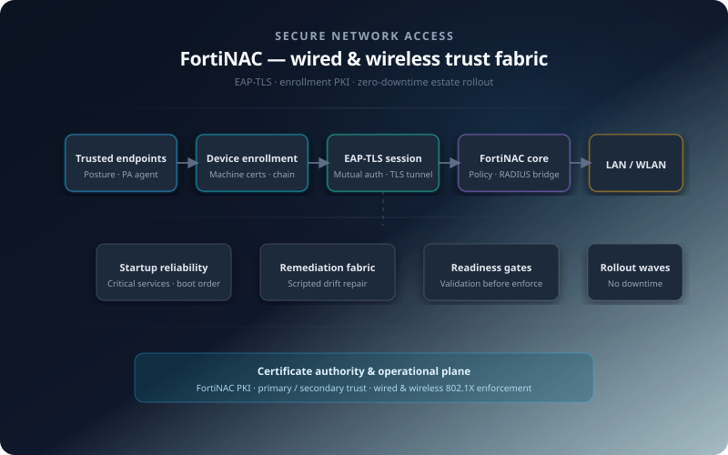

Access boundary engineering · Wired & wireless estate
Network access trust & firmwide cutover
LAN and WLAN needed identity-bound device trust without freezing the business during migration—tightening attach while preserving uptime and replacing brittle shared-secret habits with cryptographic sessions the estate could operate.
Engineering covered PKI and client trust material, endpoint readiness and remediation so auth could succeed first time, FortiNAC policy behaviour in front of switching and wireless control paths, and wave-based cutover discipline so risk dropped without drama at the desk.
Delivery context
This was infrastructure and security engineering at estate scale: every laptop and desktop had to present trustworthy credentials to the LAN and WLAN, without carving out permanent exceptions that would undermine the whole model. Success meant certificates issued and renewed predictably, endpoints configured so authentication could succeed the first time, and operations stayed boring during cutovers—no big-bang outages dressed up as progress.
When the network stops trusting ports by default
Legacy “plug and work” access could not coexist with the firm’s risk posture. The programme replaced implicit trust with device-based authentication on both wired and wireless paths—one coherent story for auditors and operators.
The constraint was operational, not theoretical: users had to remain productive while switches, controllers, and endpoints absorbed new policy. That pushed sequencing, pilots, and rollback thinking to the front—alongside technical depth on TLS-based authentication and certificate lifecycle.
Zero downtime was not a slogan; it shaped how changes were batched, validated, and communicated so secure access came online without a service-disruption narrative.
EAP-TLS, FortiNAC trust material, and device enrollment
EAP-TLS anchored authentication: endpoints prove identity with certificates, not shared secrets floating across the estate. Standing that up required disciplined PKI choreography—FortiNAC’s own trust anchors and the device enrollment certificates clients actually present.
FortiNAC certificate plane
- Primary & secondary certificates deployed so policy evaluation and administrative functions rested on explicit, rotation-aware trust—not improvised imports.
- Alignment between NAC expectations and what supplicants could present during EAP exchanges.
Device credentials
- Enrollment certificates issued and bound to identity intent for machine authentication flows.
- Design emphasis on renewal and breakage modes—where authentication silently fails when PKI drifts.
{kind=link}

Endpoint posture before enforcement turns strict
802.1X fails loudly for users when supplicants, adapters, or OS posture disagree with policy. The programme treated endpoint readiness as a first-class deliverable—validation gates before segments inherited mandatory authentication.
Configuration baseline
Wired and wireless profiles, trust stores, and supplicant behaviour tuned so EAP-TLS could complete without desk-level improvisation.
Validation discipline
Readiness checks across cohorts so failures clustered into fixable patterns instead of opening silent bypass exceptions.
User-visible friction
Communications and sequencing aimed at minimizing disruption—authentication changed; work patterns did not become a lottery.
Remediation scripting, services, and Persistent Agent
At scale, manual touch-up does not survive the second week. Engineering focused on repeatable remediation, dependable local agents, and boot-time behaviour that keeps authentication plumbing alive.
- Remediation scripting to correct misconfiguration drift and accelerate closure of readiness gaps picked up during validation.
- Three required services engineered to always start at boot—eliminating a class of intermittent failures that masquerade as “random Wi‑Fi issues.”
- FortiNAC Persistent Agent deployed so posture and continuity lived on the endpoint—not only at the moment of network attach.
Together, these moves shifted the programme from “configured” to operationally reliable under real reboot cycles, patches, and firmware churn.
Firmwide rollout with zero-downtime discipline
Expansion followed waves that respected change appetite: prove stability, absorb lessons, widen coverage. The objective was firmwide secure access enablement without trading away uptime narratives.
Coverage extended across wired and wireless concurrently where architecture allowed, with checkpoints so controllers, switches, and NAC policy stayed in sync. Roll-forward decisions leaned on readiness telemetry—not optimism.
Rollout quality meant predictable behaviour per site cluster: the same authentication story in the boardroom VLAN as on the floor SSIDs—without bespoke per-floor hacks.
Network, security, and endpoint teams on one critical path
NAC programmes fail in handoffs. This delivery kept operational coordination explicit: infrastructure owned cut windows and path diversity; security owned trust outcomes; endpoint engineering owned remediation throughput.
Decision logs tied certificate changes, policy toggles, and pilot expansions together—so root cause after incidents pointed to systems, not ambiguity about who approved a variance.
Security and operational outcomes
The programme delivered a harder trust boundary on both Ethernet and Wi‑Fi: certificate-backed authentication, consistent FortiNAC enforcement, and endpoints engineered to stay auth-ready—not a paper policy layered on a permissive LAN.
Operational results
- Device-authenticated access normalized across wired and wireless infrastructure.
- EAP-TLS with enrolled device certificates—reducing shared-secret exposure and raising cryptographic assurance.
- FortiNAC Persistent Agent and service reliability investments—fewer fragile “works until reboot” outcomes.
- Zero-downtime posture preserved productivity while secure access became the default.
Framed end-to-end, this reads as enterprise secure access modernization: endpoint readiness, PKI discipline, and staged execution—not a narrow networking ticket.